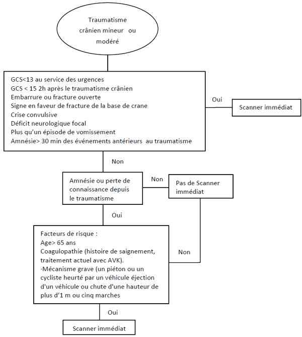

Bienvenue Sur Medical Education
Traumatisme crânien mineur de l'adulte
Spécialité : traumatologie /
Points importants
-
75-80% des TC
-
La profondeur d'un traumatisme crânien (TC) est définie par le
 score de Glasgow (GCS)
score de Glasgow (GCS)
-
Un traumatisme crânien mineur est défini par un score de Glasgow compris entre 13 et 15 avec un examen neurologique normal
-
Un traumatisme crânien modéré est défini par un score de Glasgow entre 9 et 12
-
Problème majeur de santé publique, en France l'incidence est de 150 à 300 TC pour 100 000 habitants/an
-
La prise en charge des TC mineurs reste encore un sujet de controverse : scanner cérébral ? Hospitalisation ?
-
L'objectif principal en urgence est d'évaluer le risque d'atteintes cérébrales ou du rachis cervical et donc la nécessité d'une imagerie médicale
-
Plusieurs scores cliniques sont proposés dans la littérature pour l'évaluation de la gravité et l'indication à une imagerie
-
Accidents de la circulation représentent environ 50% surtout les adultes jeunes de sexe masculin. Les chutes représentent de 21 à 32% et sont plus fréquents aux âges extrêmes de la vie
Présentation clinique / CIMU
SIGNES FONCTIONNELS
score de Glasgow (GCS)score de Glasgow compris entre 13 et 15 avec un examen neurologique normalscore de Glasgow entre 9 et 12Présentation clinique / CIMU
SIGNES FONCTIONNELS
Généraux
- Agitation
- Vertiges
- Nausées, vomissements
Spécifiques
- Céphalées
- Perte de conscience initiale, intervalle libre
- Cervicalgies
- Crise convulsive
- Amnésie
- Otorragie,otorrhée
- Rhinorragie, rhinorrhée
CONTEXTE
Terrain
- Age (pic d'incidence des TC entre 15 et 24 ans dans les deux sexes avec une proportion plus élevée d'hommes). On retrouve deux autres pics d'incidence, entre 0 et 5 ans et après 65 ans
- Ethylisme chronique
Traitement usuel
- Interrogatoire systématique du patient ou de l'entourage sur la prise d'anticoagulants, d'antiagrégants plaquettaires ou de toxique
Antécédents
- Médicaux et chirurgicaux, notion d'allergie
Circonstances de survenue
- Le plus souvent AVP, mais également chutes, accidents de sport, traumatismes pénétrants
- La cinétique et les modalités du traumatisme sont à rechercher ++ (casque, ceinture, airbags déclenchés, désincarcération, dégâts du véhicule, hauteur si chute, agression...)
EXAMEN CLINIQUE
Evaluer les fonctions vitales : ABC (voies aériennes, respiration, circulation)
Neurologique
-
Evaluation de la conscience à l'aide du score de Glasgow
-
Evaluer les paires crâniennes et surtout les pupilles :
- taille, symétrie, oculo-motricité
- réflexes photomoteurs, réflexes cornéens (penser à enlever les lentilles)
- Rechercher un déficit moteur
Examen du crâne à la recherche
- D'une plaie de scalp imposant une suture en urgence (++)
- D'une embarrure (mais diagnostic surtout radiologique)
Examen du rachis cervical
- Mobilité passive puis palpation douce des épineuses
- Au moindre doute : immobilisation par collier semi-rigide
Examen de la face à la recherche
- D'une rhinorrhée
- D'un hématome périorbitaire (fracture de la base du crâne)
- D'une paralysie de l'oculomotricité (fracture de l'orbite)
- D'une otorragie, surdité, paralysie faciale périphérique (fracture de rocher)
- D'une fracture de massif facial, disjonction crânio-faciale, articulé dentaire
Hémodynamique
- PAS > 90 mmHg si absence de signe d'HTIC
Respiratoire
- Troubles respiratoires qui pourraient compromettre une oxygénation cérébrale de qualité
Recherche de lésions associées
- Abdominales, thoraciques, osseuses (bassin, membres)
Examens paracliniques simples
- FC, PA, SpO2/h
- Température, ECG, Hémoglobine capillaire, glycémie capillaire
CIMU
- Tri 3 (patient à examiner dans l'heure), si trauma crânien mineur
-
Tri 2 (patient à examiner dans les 20 min), si trauma crânien modéré
Signes paracliniques
BIOLOGIQUES
-
Pas d'indication spécifique
-
Ionogramme sanguin, glycémie
-
Toxiques urinaires et alcoolémie si conscience altérée
IMAGERIE
TDM cérébrale si :
-
GCS < 13 lors de l'évaluation initiale
-
GCS < 15 2 heures après le traumatisme
- Suspicion de fracture du crâne ouverte ou embarrure
- Suspicion de fracture de la base de crâne (otorragie, ecchymose orbitaire, fuite liquide cérébro-spinale de l'oreille ou du nez)
- Convulsions post-traumatiques
- Déficit neurologique focal
- Plus d'un épisode de vomissements
- Amnésie > 30 min avant le TC
-
En cas de perte de connaissance initiale où d'amnésie post-traumatique, le scanner sera demandé immédiatement si :
- âge > 65 ans
- coagulopathie (histoire de saignement, traitement actuel avec AVK, antiagrégants plaquettaires, héparine)
- cinétique élevée
- NICE clinical guidelines head injury
 _364 Photo Indications du scanner cérébral en cas de de traumatisme crânien modéré
Radiographies du rachis cervical F + P + cliché bouche ouverte
-
Si rachialgie cervicale ou contracture avec :
- âge > 65 ans
- cinétique importante
- patient incapable de faire une rotation de 45°
Indications TDM rachis cervical si :
-
GCS < 13 lors de l'évaluation clinique initiale
- Difficulté à obtenir les incidences de radiographie standard interprétable
- Suspicion clinique de lésion du rachis malgré radiographies standard normales
Radiographie du crâne
-
Rares indications :
- TC pénétrant (arme blanche)
-
recherche de balle d'arme à feu
Diagnostic différentiel
Traumatisme de rachis cervical
- Tout traumatisme crânien est un traumatisme de rachis cervical jusqu'à preuve du contraire
Traumatisme de massif facial
- Importance d'un examen clinique détaillé
Traitement
TRAITEMENT PREHOSPITALIER/INTRAHOSPITALIER
Stabilisation initiale
-
Collier cervical semi-rigide si :
-
GCS < 15 à l'admission
- douleur cervicale
- contracture
- déficit neurologique focal
- paresthésie des extrémités
-
- Suture de toute plaie du scalp
- Prévention des agressions cérébrales secondaires systémiques par le maintien d'une SpO2 > 90% et une PAS > 90 mmHg
- Traitement de la douleur
Suivi du traitement
- Traitement antiémétique
- Prévention de tétanos
- La prévention systématique des crises convulsives n'est pas recommandée
Surveillance
CLINIQUE
-
Score de Glasgow :
-
toutes les 30 min si GCS < 15
-
si GCS à 15 : toutes les ½ heures pendant 2 heures, toutes les heures pendant 4 heures puis toutes les 2 heures
-
si un patient avec GCS égal à 15 se détériore à tout moment après la période initiale de 2 heures, les réévaluations doivent reprendre toutes les ½ heures.
-
Examen des pupilles, réévaluation neurologique
-
Signes d'HTIC (céphalées, nausées, vomissements)
-
Température, PA, FC, SpO2
PARACLINIQUE
Score de Glasgow :
-
toutes les 30 min si GCS < 15
-
si GCS à 15 : toutes les ½ heures pendant 2 heures, toutes les heures pendant 4 heures puis toutes les 2 heures
-
si un patient avec GCS égal à 15 se détériore à tout moment après la période initiale de 2 heures, les réévaluations doivent reprendre toutes les ½ heures.
Refaire TDM cérébrale si
- Agitation
- Comportement anormal
- Baisse d'un point sur le score de Glasgow pendant au moins 30 min
- Céphalée sévère ou croissante ou vomissements persistants
- Installation des nouveaux signes neurologiques de localisation : déficit moteur, anomalie des pupilles...
-
Si GCS toujours < 15 après 24h : discuter avec les radiologues une nouvelle imagerie cérébrale même si la clinique du patient reste inchangée
Devenir / orientation
CRITERES D'HOSPITALISATION
-
Anomalies au scanner cérébral (avis neurochirurgical)
-
GCS < 15
-
Scanner non disponible immédiatement (si indiqué) ou patient non coopérant
-
Céphalée intense ou vomissements persistants
-
Alcoolisation aiguë ou autre intoxication, traitement usuel anticoagulant, état de choc, méningisme, fuite de LCR
CRITERES DE SORTIE
-
Pas d'indication au scanner cérébral ou TDM cérébrale normale
-
GCS = 15
-
Retour à domicile uniquement si un proche peut assurer la surveillance du patient
-
Mise en place des aides pour les patients âgés qui vivaient seuls avant le traumatisme
ORDONNANCE DE SORTIE
-
Collier cervical semi-rigide si nécessaire
-
Antalgiques
-
Clichés dynamiques du rachis cervical à J8-J10 pour éliminer une entorse si doute ou si cinétique en faveur
RECOMMANDATIONS DE SORTIE
GCS < 15GCS = 15Conseils aux traumatisés crâniens orales et écrites quelque soit le degré du traumatisme crânien
- Surveillance rapprochée pendant 48 heures par une personne de l'entourage car certains signes peuvent apparaître à retardement, indiquant une lésion plus sérieuse
-
Principaux signes pour lesquels il faut demander un nouvel avis médical auprès du médecin traitant ou auprès du Service des Urgences :
- somnolence excessive : avec impossibilité d'être réveillé
- nausées et vomissements persistants : vomissements qui se répètent plus de deux fois, ou qui reviennent après avoir cessé
- maux de tête importants ou qui augmentent de plus en plus en intensité
- troubles de la vue : vision double, déplacement non symétrique des yeux ou une pupille (petit rond noir au centre de chaque oeil dont le diamètre varie avec la lumière) semble plus large que l'autre
- mouvement anormaux : difficulté à utiliser un bras ou une jambe comme avant, déséquilibre à la marche ou vertiges
- troubles de la parole : difficulté à parler ou propos incohérents
- changement de comportement : agitation ou au contraire calme inhabituel
- convulsions ou mouvements involontaires répétés des bras et des jambes
Prévention
- Rassurer et expliquer le caractère bénin du traumatisme afin de limiter la chronicisation des troubles : anxiété, céphalée, trouble de l'humeur...
Bibliographie
-
NICE clinical guidelines head injury : recommendations National Institute for Health and Clinical Excellence September 2007
-
Comparison of the Canadian CT Head Rule and the New Orleans Criteria in Patients with Minor Head Injury Stiell IG et coll, JAMA. 2005 Sep 28; 294(12):1511-8.
-
Urgences médico-chirurgicales de l'adulte, Carli, Riou 2004
Auteur(s) : Hamdi BOUBAKER, Saïd LARIBI